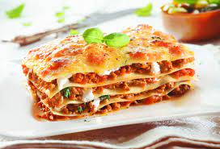

Lassagne

Min Mammas Lassagne
Ett recept på Lassagne jag fick av min mamma som hon alltid brukar laga hemma.
Kompletteras gärna med vitlöksbröd.
Ingredienser
Köttfärs såsen
- 2 förpackningar passerade tomater
- 1 gul lök
- Vitlök (antal efter smak)
- Tomatpuré
- 500-800g köttfärs
- Vitlökspeppar
- Salt
- Svartpeppar
- Vitpeppar
- Ev 2 lagerblad
- Socker (efter smak, tar bort syrlight)
Ostsåsen
- Smör
- Vetemjöl
- 3 dl grädde
- Mjölk
- Riven Ost (Västerbotten eller Parmesan)
- Lassagne Plattor
Steg 1 köttfärsåsen
- Fräs lök och vitlök (ska ej ta färg bara mjukna)
- I med köttfärsen fräs på det
- I med Tomatpurén 1/2 - 1 hel tub
- Krydda på med ovanstånde kryddor
- I med passerade tomater och ev socker och lagerblad
- Låt stå och puttra ihop på medelvärme
- Smaka av vartefter för kryddning
- Ta bort lagerblad innan lassagnen ska börja tillverkas
Steg 2 Ostsåsen
- Smält en rejäl klick smör i en kastrull
- Häll i mjöl och vispa till en smet
- Späd med grädde (blir det för tjockt spädd med mjölk)
- I med en rejäl jävla mängd riven ost
- Rör hela tiden på medelvärme så det inte bränner fast
- När allt är smält och du är nöjd med konsistens så smaka av med vitpeppar och salt
Montering av Lassagnen
- Smörj en form och köttfärsås i botten
- Sedan lassagne plattor
- Och sen ostsås eller varva som du vill
- In i ugn på 200 grader i 20-30 minuter
- Strö på tärnad fetaost sista 5 minuterna